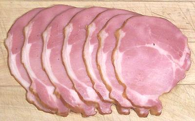
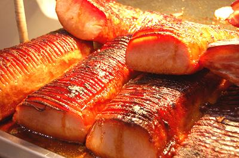

Canadian Bacon / Back Bacon

[Short Cut Bacon (Australia); Back Rashers (Ireland); Irish Bacon (US)]
When they say just "bacon" in England, Ireland and much of Canada, this
is what is meant. What we know as bacon in the United States is called
"streaky bacon" in those benighted regions. This product is made from
center-cut boneless pork loin (where we get pork chops from). It may be
salt cured or salt cured and smoked like our bacon, then sliced.
Comparitively, it is generally dry and disappointing in flavor, tasting
more like ham than real bacon. Loin is the least flavorful meat on the
pig and there's not enought fat to compensate for that.
The photo shows slices of the whole loin. It is also commonly sold as
just the round "eye" part with almost no fat at all.
More on Pork Products.
Buying:
Most well stocked deli departments will have this
just about anywhere in North America. It can be purchased in a cylinder
or sliced to the thickness you desire.
Cooking:
This product does not have enough fat to fry in
so it must be fried in lard, oil or, preferably, fat from real bacon. It
should not be fried crisp because it will then be dry and flavorless.
Peameal Bacon

Sold in parts of Canada, this product is eye of center cut pork loin
given a sweet pickle cure and is not smoked. It is called "peameal"
because it was traditionally rolled in meal made from yellow peas, but
today it's usually cornmeal. The photo specimens, from Toronto, Canada,
are roasted and drizzled with a honey glaze and held under heat lamps.
Photo by snowpea&bokchoi distributed under license Creative
Commons
Attribution 2.0 Generic.
Peameal bacon sandwiches are a signature dish of Toronto, Canada.
Slices of the bacon are made up in a kaiser roll with mayonnaise,
lettuce and tomato.
Buying: Peameal Bacon is seldom found outside of Canada.
Cooking: It is sold in pre-baked and not, so read the
label. It is often grilled until crispy on the outside and slightly rare
on the inside, or it may be oven roasted with a honey glaze as in the
photo.
ap_baconbz 120808 - www.clovegarden.com
©Andrew Grygus - info@clovegarden.com - Photos on this
page not otherwise credited © cg1 -
Linking to and non-commercial use of this page permitted